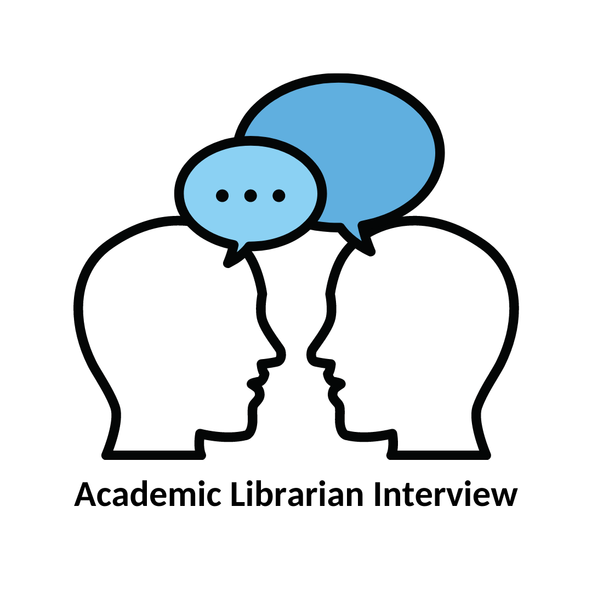

Introduction
One of the aspects that drew me toward librarianship is its field flexibility. There are many different areas of librarianship that are fascinating. In this MLIS program and at work, I have been introduced to several possible library professions, including: academic librarianship, public librarianship, school librarianship, special librarianship, and publishing. The insight I gained from these introductions is displayed in the evidence section below.
Each library setting is important and serves a different purpose. Here are some of the organizational settings with which I have become familiar:
- Academic libraries are mainly involved in higher eduction, and academic librarians assist students with specific research projects.
- Public libraries serve a wide range of patrons from a local area. Public librarians may assist patrons with a variety of needs, including performing everyday tasks, learning a new language, finding books, borrowing multimedia and other devices, meeting with community groups, learning what resources are available for them within their community, and more.
- Archive and preservation centers support libraries and museums. Curators work with collections of books or other materials which require extreme care.
- Finally, as far as my experience goes, publishers (or, those involved in the publishing industry) at library presses also have a unique skillset and position.
Although there are many different settings for information professionals, together they form a full community working together to assist in finding, organizing, sharing, and creating information. Some of the skills employed at each library are similar. For example, Freeburg & Nick Vera (2021) argue that among public and academic libraries, the need for management and teaching skills remains constant (p. 26). Specifically, management skills are valued across organizational settings, as I observed at the ALA LibLearnX conference this January in Zablud's project management presentation. There, she showed us several projects across different library settings and as a diverse group of library and information professionals, we discussed simple ways to improve as leaders and managers in order to complete them. Another similarity is between librarianship and publishing. Kennedy & Brancolini (2012) use research as a bridge between librarianship and publishing. Librarians may conduct their own research, or develop library presses, in which a library publishes its own journal, as I demonstrate in evidence example four.
Additionally, there are several observable differences across information professionals' organizational settings. The observable differences I've observed distinguishing school, public and academic libraries from one another include: required prior knowledge, patron groups, and methods of communication. These slight differences are built on common skills that information professionals learn, but are specialized for particular types of libraries. The most different organizational setting I've observed is the publishing industry. My work that has informed this introduction is listed and detailed below.
Evidence
1) Interview: Academic librarian
I conducted this interview in spring 2021, for INFO 285: Academic Research. I interviewed my supervisor, Mr. Scott Minor, the head librarian at California Northstate University. From this interview I gained a lot of insight for academic librarianship. Academic librarians focus on research skills, information literacy, and career guidance. These librarians mostly assist students in higher education. Mr. Minor was drawn toward librarianship while in high school and college. A noteworthy part of his background is that he also has a masters degree in chemistry in addition to his MLIS, which is common among other library professionals in higher education. With his knowledge and understanding of chemistry, he is able to help faculty and students with chemistry research and laboratory materials. From this interview and Mr. Minor's shared thoughts, I've learned that academic librarianship is centered around helping specialists in their fields, and as a result, must employ librarians who are familiar with these specialized fields. There are still key differences between undergraduate and graduate schools, as well as colleges, community colleges, trade schools, and universities.
I included this piece of evidence to show how I've sought information about academic librarianship and to demonstrate my understanding of academic librarianship as a unique library setting.
2) Observation report: Instruction session on shelf-filling strategies by Indiana State Library
 Observation report
Observation report
I wrote this observation report titled "Instruction observation report: Shelf-filling strategies for K-12 public and school libraries" for an assignment in INFO 254: Information literacy, which I was tasked to analyze an instructor's techniques and practices in an online instruction session. The online instruction session I chose was titled: "Ways to fill your shelves without draining your budget" and was led by Laura Jones, the Northwest Regional Coordinator for the Indiana State Library.
The unexpected insight I gained from attending this workshop was on the inner workings of school and public libraries. Laura shared how public and school libraries expand their book collections, interact with patrons, and connect patrons with new books through social media channels I didn't previously know about, like Bookstagram, blogging sites, and publishers' sites, as well as popular social media platforms like Twitter and Instagram (and interacting with publishers and patrons there). I previously didn't understand how collections were developed in public and school libraries, and assumed collections were expanded or altered by the institution as a whole. In her instruction session, Laura demonstrated how actions, including blog and review writing, correspondence, and constant searching (for sources of free or opportunistic book grabs), are most effective in expanding a library's collection. As a benefit, these actions have also helped Laura stay up-to-date on literature that is newly published, and aware of the needs of her library patrons. Laura introduced me to a new set of responsibilities for public and school libraries.
I chose to include this piece of evidence under competency B because this assignment gave me valuable insight to a set of library settings with which I was previously unfamiliar.
3) Health Library Design Project
I speak from 5:37 - 10:30 (about 5 minutes).
This piece of evidence is my health library design project, a group project in which my group members and I redesign the Stanford Health Library and as a result, learned what makes health libraries uniquely essential to their communities. My role in this group was to create an action plan for this health library to conduct community outreach.
Community outreach at a special library is unique. Specifically regarding our health library, I determined it held authority as a source of reliable health information, and its patron base consisted of members of the public in need of reliable health information. Community outreach is intended to bridge the gap between this library's staff and patrons, but in order to do this for a library and patron base I found unfamiliar, I had to do extensive research. I found project planning, employee training, newsletter writing, content translation, and bookmobile driving as possible methods of reaching the library's surrounding community. Some of these tasks, mainly project planning and employee training, are similar to tasks performed at other library settings. However, effective writing, translation and bookmobiles need to be performed with this health library in mind. While Laura ( in evidence piece #2 ) conducted outreach in school and public libraries through social media platforms as well, her focus on book reviews and teen and youth reading would not apply here. With special libraries, and health libraries in particular, it is essential to provide reliable, accurate content. Health libraries work with health professionals to present accurate data and information. There is also the issue of information discovery, interpretation and sharing. While other library and organizational settings certainly aim for accuracy and reliability, special libraries are especially concerned about the portrayal of information. With this health library, its staff is tasked with ensuring the information they share with patrons is accurate, then drawing a clear boundary, explaining that a health library does not replace a doctor's appointment, diagnosis, or visit. Further, my group and I found that this health library needs to work in conjunction with other health organizations to establish the health library's role as a doorway toward various health organizations.
Our written report on the Stanford Health Library.
This report accompanies the video presentation linked above. I chose to include this report because we turned in the report and presentation together, and because in this report, we cover more of the statistics and basic description of the health library we designed, as well as the written portion of our presentation. From this report, I expand upon what I stated in the presentation with written information about community outreach in special libraries.
I chose to include this set (the presentation and paper) as one piece of evidence because the process of completing this project taught me the markings of a successful health library, how health libraries qualify as special libraries, and how special libraries are different from other libraries.
4) M.O.U. Study
281: Memorandum of Understanding
This piece of evidence is an assignment titled "a Memorandum of Understanding," which I completed for INFO 281: Scholarly communication and publishing: Access, intellectual property, and impact. For this assignment, I was tasked to act as the operator of an academic library press, and write a "memorandum of understanding" for potential authors submitting their work for potential publication. This involvement in the publishing side of librarianship gave me important insight to the breadth of librarianship. This course, and this assignment in particular, demonstrated to me that information professionals do not necessarily need to work in a library setting. The publishing industry and libraries overlap in some areas: book circulation, collection development, an udnerstanding of how research is conducted, an understanding of research and publication standards, outreach to new authors, and insight to what patrons (or clients) want to read are all tasks library and publishing professionals find valuable. In writing this memorandum, I utilized the management skills I researched in other assignments, like the special library redesign, to create the press roles, budget and timeline. I did have to research certain aspects of journal publication, including peer review, and methods of hosting a digital journal. Through these tasks, I learned how the publishing industry (whether integrated into a library or separate) is different from other organizational settings.
I included this piece of evidence in this competency because completing this assignment introduced me to the publishing industry as an organizational setting for information professionals, since publishing requires many skills that librarians use.
Conclusion
Information professionals can work in many different organizational settings. In this MLIS program, I have been introduced to several. I am particularly interested in libraries, and have explored academic, public, school and special libraries. These three settings are similar in that their library professionals are tasked with collection development and patron outreach. Academic and special libraries both require a level of expertise in particular areas of research that are not found at public and school libraries. For example, my academic library supervisor has an additional masters degree in chemistry and uses it regularly to assist graduate students and faculty with laboratory and lecture research. In researching health libraries, my group and I found an additional responsibility to create a boundary for what information the library is responsible for providing accurately and clearly, and which information patrons should seek from doctors and other health professionals. Public and special libraries have a similar patron range: the health library I helped research was intended to support its surrounding community, as a public library does. This includes patrons with a wide range of ages, languages, and needs. In contrast, academic and school libraries more often assist patrons of a specific age range, and in particular subjects. Different from each of these settings is the publishing industry, which can be connected with a library or completely independent. However, as I learned in my course on scholarly communication, there exists a strong overlap between library professionals and publishing professionals. Until now, I have worked in an academic library and museum. I would enjoy working in other organizational settings and am open to what the future has to offer.
References
Freeburg, D., & Nick Vera, A. (2021). 'The ticket you get punched:' The divide between academic and public librarianship and the MLIS. Journal of Education for Library and Information Science 62(1), 18-34.
Kennedy, M., Brancolini, K. (2012). Academic librarian research: A survey of attitudes, involvement, and perceived capabilities. College & Research Libraries 73(5), 431-448.
Contributor, Zablud, K. (2022, January 21). How to think like a library project manager to execute your ideas. [Presentation on project management]. American Library Association: LibLearnX Conference, Zoom. Link to presentation slides.